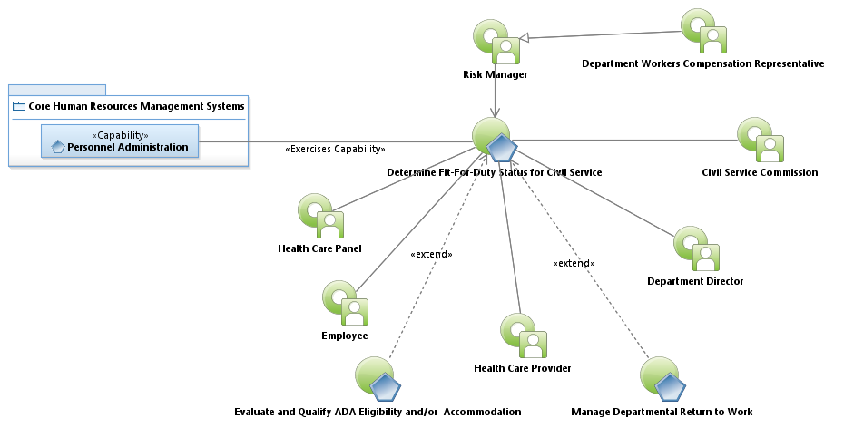
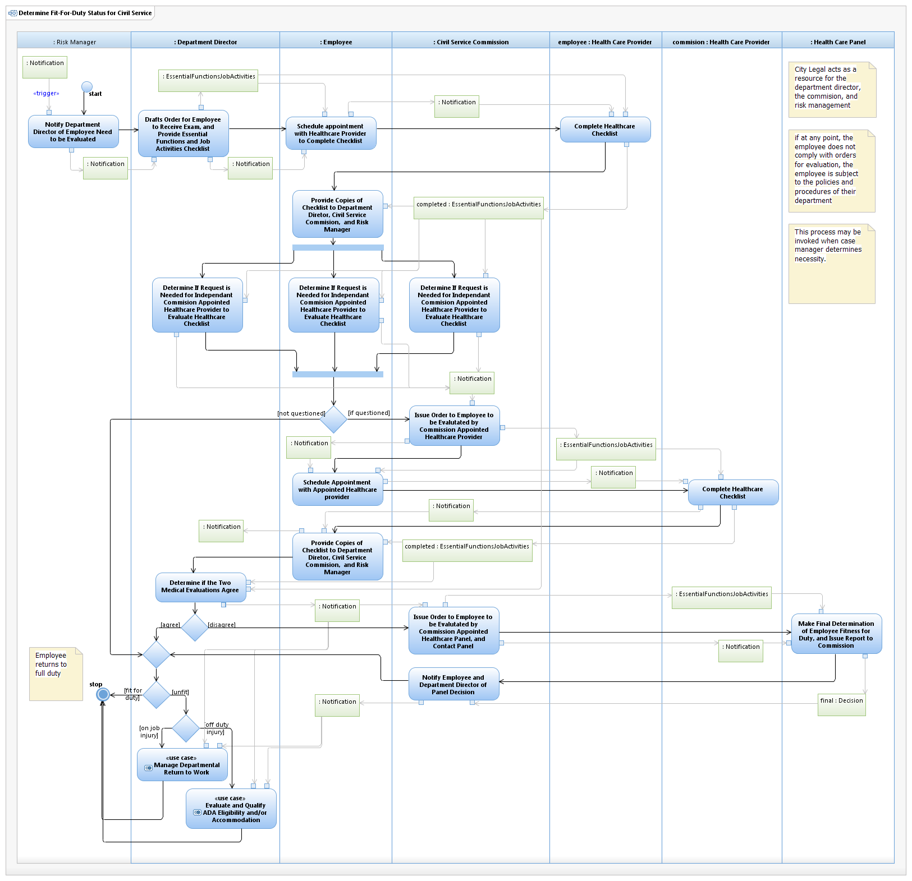

Use Case Model: Determine Fit-For-Duty Status for Civil Service
Architect: Aaron Brown, IT Enterprise Architect, Senior
Date Last Modified: 4/05/2013
User Review: Leticia Paredes, Christina Garza, Crystal Holland
Date: 4/05/2013
If a question arises as to whether a Civil Servant is physically or mentally capable of performing their duties, an evaluation of their "Fit for Duty" status occurs.
Follow link to Role Definitions

Use Case Model: Determine Fit-For-Duty Status for Civil Service

Activity Model: Determine Fit-For-Duty Status for Civil Service